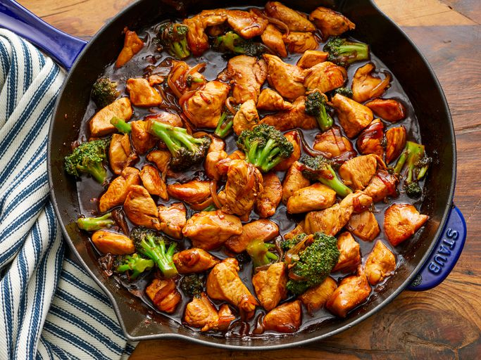

Stir Fry

Description
This stir fry recipe will make you the talk of the town.
Follow these steps to make a delicious stir fry bursting with umami. Stir fry is great for beginners.
Don't worry about exact quantites. Put 'enough'. How much is 'enough'? When it tastes right, it's enough. If you can't taste it it's not enough. If it is overpowering it's too much.
Ingredients
- Oil: This recipe starts with a neutral oil, such as canola oil heated in a skillet.
- Chicken: You'll need a pound of boneless chicken thighs, cut into pieces.
- Cornstarch: Coating the chicken in cornstarch ensures a crispy exterior every time.
- Onion: Opt for a yellow onion, as it's not too sweet and not too sharp.
- Ginger and garlic: Fresh ginger and fresh garlic take the flavor up a notch
- Broccoli: Of course, you’ll need broccoli! Fresh is best, but frozen will work.
- Water: Start the sauce with ¾ cup water.
- Sauces: Soy sauce and oyster sauce are essential for this savory stir-fry.
- Brown sugar: Sweeten things up with a tablespoon of light brown sugar.
- Seasonings: Season the stir-fry sauce with crushed red pepper and black pepper.
Steps
- Coat the chicken in cornstarch, then cook until crisp on all sides in hot oil.
- Add the onions, ginger, and garlic and cook. Transfer to a plate.
- Cook the broccoli in the skillet.
- Meanwhile, make the sauce.
- Add the chicken mixture to the broccoli, then add the soy sauce mixture.
- When the skillet starts to smoke, place a chapati in it. Cook until bottom has brown spots, about 30
seconds, then flip and cook 30 seconds more.
- Cook until the chicken and broccoli are well-coated and the sauce is thickened.